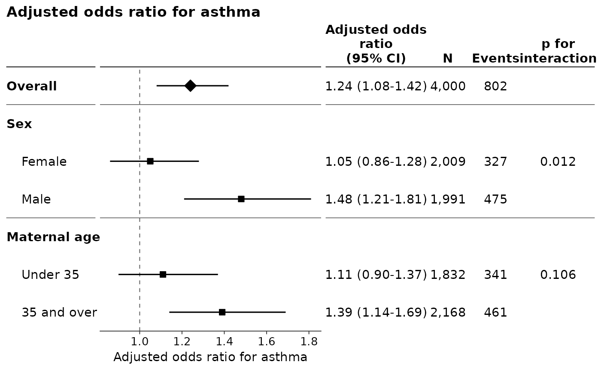
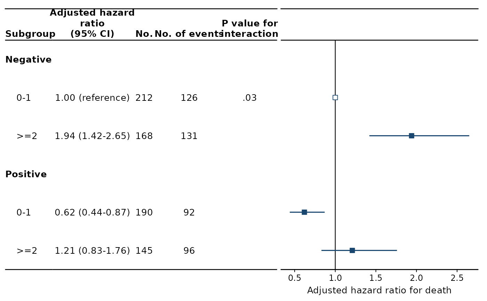

Draw a forest plot and its table from a data frame of estimates
Source:R/foresty_data.R
foresty_data.RdTakes the estimates you already have – one row per row of the figure, with
the effect and the two ends of its interval – and draws the figure that
foresty_app() draws: the forest plot and, beside it, the table of numbers,
aligned row for row, in any of the journal styles of foresty_layout().
Usage
foresty_data(
data,
estimate = NULL,
conf.low = NULL,
conf.high = NULL,
label = NULL,
group = NULL,
n = NULL,
events = NULL,
person_time = NULL,
p = NULL,
interaction_p = NULL,
reference = NULL,
emphasis = NULL,
measure = "OR",
outcome = NULL,
ratio = NULL,
adjusted = FALSE,
ci_level = 0.95,
table = TRUE,
columns = NULL,
person_time_unit = NULL,
layout = NULL,
label_header = NULL,
title = NULL,
subtitle = NULL,
xlab = NULL
)Arguments
- data
The estimates, one row per row of the figure. A data frame, a
tibble, adata.table, or anythingas.data.frame()accepts.- estimate, conf.low, conf.high
The columns holding the effect and the two ends of its interval.
NULL, the default, looks for them by name.- label
The column holding what each row is called.
NULLlooks forlabel,term,subgroup,nameorvariable, and falls back on the row numbers.- group
The column that blocks the rows into subgroups, or
NULLfor a figure of one block.- n, events, person_time
The columns of counts to write in the table beside the plot, where the data carries them.
- p
The column of p-values for the rows themselves. A figure carrying a test of the interaction leaves this column off unless
columnsasks for it by name: two columns of p-values side by side are read for each other.- interaction_p
The column of p-values for the interaction, written once per block.
- reference
A logical column marking rows that are a definition rather than an estimate – the reference level of a categorical exposure – which are drawn without an interval and written "1.00 (reference)".
NULLtreats a row whose interval is missing and whose estimate is the null value as one.- emphasis
A logical column marking the rows drawn for emphasis.
- measure
What the estimates are, as one of
"OR","RR","HR","IRR","MD"and"Coefficient", or as a name of your own –"Standardised mean difference","Prevalence ratio"– in which case say withratiowhich side of the null it is drawn about.- outcome
What the measure is a measure of, named so that the axis reads "Odds ratio for incident asthma" rather than "Odds ratio".
- ratio
Whether the estimates are ratios, drawn about 1 on a scale where the null is 1, rather than differences drawn about 0.
NULL, the default, takes it frommeasure, which can only be done for a measure named by one of the codes above; a measure described in words of your own has to say, and it is an error not to.- adjusted
Whether the estimates are adjusted, which is a word the axis and the heading of the table say if so.
forestycannot tell from a column of numbers, so it asks.- ci_level
The confidence level the intervals were formed at, which is what the heading of the table reports. It is not used to compute anything: the interval is the one in the data.
- table
Whether to draw the table of numbers beside the plot.
- columns
Which columns of that table to draw, and in what order. See
foresty_main().- person_time_unit
The unit person-time is reported in, as
person_time_unit = 1000. Optionally named, to head the column.- layout
The style of the figure, as a name or a
foresty_layout().- label_header
What to write over the column of row labels.
NULLwrites "Subgroup" over a blocked figure with nothing emphasised, and nothing over the rest.- title, subtitle, xlab
The title over the figure, the line under it, and the label under the plot.
NULLtakes the one the measure implies andNAdraws none.
Value
A foresty figure: a ggplot/patchwork object carrying its
estimates, which prints as the figure and can be added to as any ggplot
can.
Details
This is the entry point for numbers that did not come out of a model this
package can read. A meta-analysis, a table being redrawn from a paper, a
model fitted by something foresty does not support, a set of results typed
out by hand: pass the data frame, name the columns holding the estimate and
its interval, and the figure is the same figure.
The data
A data.frame, a tibble, a data.table or a matrix, all of which are
read as the plain data frame the columns are taken from. One row is one row
of the figure, drawn in the order the rows are in, so sort the data the way
the figure should read.
The estimate and the two ends of its interval are the only columns the
figure cannot be drawn without. They are looked for by name when they are
not named here – estimate, conf.low and conf.high, and the usual
alternatives (lower/upper, lcl/ucl, ci_low/ci_high) – so a
frame that came out of broom::tidy(conf.int = TRUE) needs nothing said
about it at all.
Subgroups
group names a column that blocks the rows: its values become the headings
the rows sit under, in the order they first appear. A block holding a single
row takes no heading of its own – the row is labelled with the block
instead – which is what makes an "Overall" row a row rather than a heading
with one line under it.
emphasis names a logical column marking the rows drawn for emphasis: a
bolder label, a diamond rather than a square, and a rule setting the block
off from the ones around it. It is how the overall estimate is set apart
from the subgroups read against it. See foresty_layout().
interaction_p names a column of p-values for the interaction. One test
covers the block it was taken across, so it is written once, against the
first row of the block, rather than repeated down the column.
What is not here
The figure carries no model, because it was not given one. summary(),
foresty_report(), coef(), vcov() and the coefficient table are
properties of a model and refuse on a figure drawn this way, naming
foresty_main() and foresty_interaction() as the way to have them.
as.data.frame(), broom::tidy() and print() work as they do on any
other foresty figure.
See also
foresty_main() and foresty_interaction(), which start from a
fitted model; foresty_layout() for the styles; foresty_app(), whose
figures this one reproduces.
Examples
subgroups <- data.frame(
subgroup = c("Overall", "Female", "Male", "Under 35", "35 and over"),
block = c("Overall", "Sex", "Sex", "Maternal age", "Maternal age"),
overall = c(TRUE, FALSE, FALSE, FALSE, FALSE),
estimate = c(1.24, 1.05, 1.48, 1.11, 1.39),
conf.low = c(1.08, 0.86, 1.21, 0.90, 1.14),
conf.high = c(1.42, 1.28, 1.81, 1.37, 1.69),
n = c(4000, 2009, 1991, 1832, 2168),
events = c(802, 327, 475, 341, 461),
p_int = c(NA, 0.012, NA, 0.106, NA)
)
foresty_data(
subgroups,
label = "subgroup", group = "block", emphasis = "overall",
interaction_p = "p_int",
measure = "OR", outcome = "asthma", adjusted = TRUE
)

# Every combination of two categorical variables against one of them, which
# is what foresty_interaction(reference = ) draws from a model: the blocks
# are the levels of the modifier, the rows the levels of the exposure, and
# one row of the figure is the group the rest are read against.
cells <- data.frame(
ecog = c("0-1", ">=2", "0-1", ">=2"),
mutation = c("Negative", "Negative", "Positive", "Positive"),
estimate = c(1.00, 1.94, 0.62, 1.21),
conf.low = c(NA, 1.42, 0.44, 0.83),
conf.high = c(NA, 2.65, 0.87, 1.76),
n = c(212, 168, 190, 145),
events = c(126, 131, 92, 96),
reference = c(TRUE, FALSE, FALSE, FALSE),
p_int = c(0.031, NA, NA, NA)
)
foresty_data(
cells,
label = "ecog", group = "mutation", reference = "reference",
interaction_p = "p_int", measure = "HR", outcome = "death",
adjusted = TRUE, layout = "jama"
)
